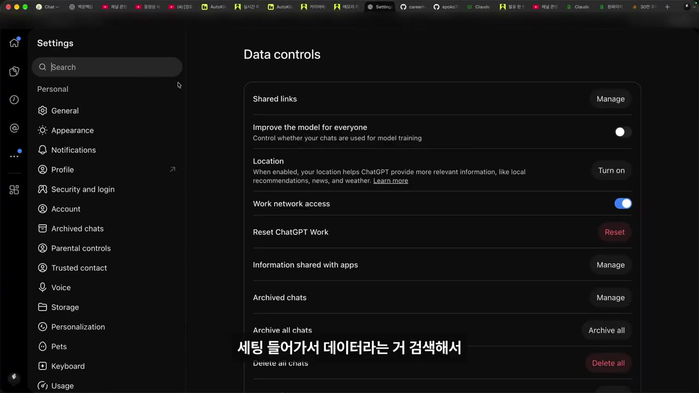
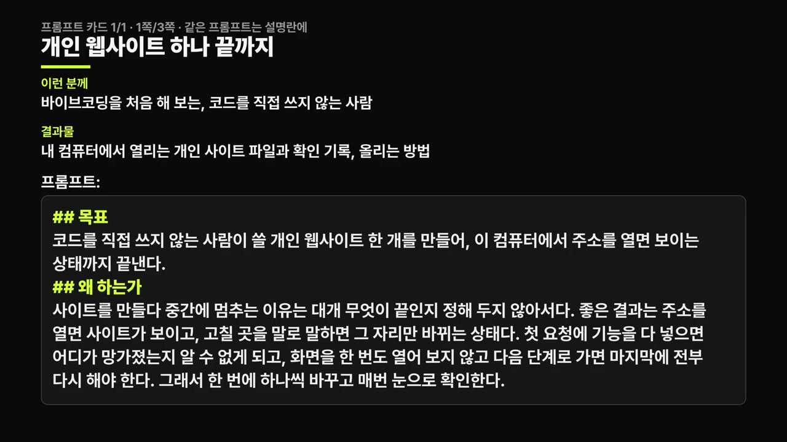

[총정리] 200불 플랜 5개 쓰는 사람의 AI 구독료 기준, 비개발자용
▶ 원본 영상 보기한눈에 보기
- AI 구독료의 기준은 금액이 아니라 '한도에 막히는지'다. 무료든 20불이든 200불이든 막히지 않으면 그대로 쓰고, 막히면 올린다.
- 알렉스는 200불 플랜 5개(월 1,000불)를 쓰는데, 광고 영상 3개면 몇 천 불을 벌 수 있어 쓴 만큼 이득이 나기 때문에 가치가 있다고 본다.
- 매일 나오는 새 AI를 갈아탈 필요 없이 ChatGPT와 Claude 둘만 써도 된다. 입문자·이미지 생성은 ChatGPT, 코딩 위주면 토큰이 더 싼 Claude.
- 비개발자도 Claude Code 로 웹사이트·보고서·PDF·마케팅 자료까지 다 만들 수 있고, 바이브코딩 첫 성공 경험은 '개인 웹사이트'로 시작하라.
- 앱으로 돈 벌기는 현실적으로 어렵다. 만드는 것보다 필요한 사람을 찾아가 파는 세일즈가 병목이다.
이런 분께 도움이 됩니다
- AI 유료 플랜을 올려야 할지, 여러 개 구독이 낭비인지 고민하는 직장인.
- 코딩을 전혀 몰라도 바이브코딩을 어디서부터 시작해야 할지 알고 싶은 분.
- 내 대화가 AI 학습에 쓰이는 게 걱정돼 끄는 방법을 찾는 분.
핵심 내용
구독료 기준은 '막히는지 안 막히는지'
- 어느 플랜이 합리적인지는 개인차가 너무 커서 금액으로 정할 수 없고, 한도에 막혀 본 적이 있는지가 유일한 기준이다. (0:00)
- 무료 플랜을 쓰는데 막힌 적이 없다 → 무료 그대로.
- 20불짜리를 쓰는데 막힌 적이 없다 → 20불 그대로.
- 200불짜리를 쓰는데 막힌 적이 없다 → 200불 그대로.
- 200불 5개(1,000불)를 쓰는데도 막힌다 → 더 써야 한다.
- 잘 쓰는 사람일수록 토큰이 더 많이 필요해진다. 알렉스 본인은 1,000불도 모자라지만 1,000불 정도가 합리적이었다고 말한다.
- 회사에서 특정 AI를 막아 놨다면 다른 AI를 쓰면 된다. 오픈소스·로컬 모델도 많고 이제는 큰 차이가 없다.
💡 무료로 불편함이 하나도 없는데 유료를 써야 하나? 절대 아니다.
여러 개 구독이 낭비인지 가르는 법
- 여러 도구를 썼는데 쓴 만큼 효율이 나면 이득, 안 나면 낭비. 이 한 가지 기준으로 끝난다. (1:24)
- 알렉스는 이를 '토큰 이코노믹스'라고 부른다. 내가 쓴 토큰만큼 돈·시간·임팩트가 얼마나 나오는지 구분하는 게 핵심.
- 200불 플랜 5개로 월 1,000불을 쓰지만 사업 운영, 유튜브 롱폼 편집·제작에 집중적으로 쓴다. 광고 영상 3개를 찍으면 몇 천 불을 버니 훨씬 이득이라는 계산이다. (0:48)
💡 1,000불을 써도 그걸로 몇 천 불을 벌면 '뽕을 빼는' 것이다.
ChatGPT와 Claude, 무엇을 고를까
- 새 AI가 매일 나와도 그때그때 갈아탈 필요 없다. ChatGPT와 Claude 두 개만 써도 되고, 그것도 모르겠으면 하나만 써도 비슷하다. (2:05)
| 상황 | 추천 | 이유 |
|---|---|---|
| 입문자 | ChatGPT | 이미지 생성이 되고 쓸 곳이 많다 |
| 코딩을 많이 한다 | Claude | 토큰이 조금 더 싸다. 특히 200불 플랜은 GPT 쪽이 많이 비싸졌다 |
- 알렉스 본인은 Claude 를 많이 쓴다.
비개발자에게도 코딩 AI가 필요한 이유
- 비개발자도 코딩 AI를 쓸 일이 있고, 실제로는 비개발자가 더 많이 쓰는 것 같다고 말한다. 추천은 Claude Code 이며 Cursor 는 본인은 안 쓴다. (2:39)
- Claude Code 로 만들 수 있는 것: 웹사이트, 동영상, 보고서, 콘텐츠, 마케팅 자료, PDF.
- 못 만드는 건 인맥·사람 간 신뢰 정도이고, 그것도 고민해서 잘 쓰면 된다고 본다.
💡 "Claude Code 로 못 만드는 건 없다. 이제 안 쓰는 사람이 없다."
이미지·음성 AI는 직장인에게 전부 쓸모 있다
- 직장인의 공통 업무는 소통(말하기, 보고서 제출 후 리뷰)과 결과물 만들기(코드, 보고서, 마케팅 자료, 이미지, 상세 페이지, 영상)다. 생성형 AI 가 이 중 못 만드는 게 없으니 쓸모없는 게 없다. (3:17)
내 데이터가 학습에 쓰이지 않게 끄기
- ChatGPT 에는 내 대화가 모델 학습에 쓰이지 않게 끄는 설정이 있다. 설정에서 '데이터'를 검색해 데이터 컨트롤 항목을 끈다. (4:08)
🔁 ChatGPT 데이터 학습 끄기
- 설정 열기
- 데이터 검색
- 학습 끄기
- 1설정 열기
ChatGPT 에서 설정(Settings)으로 들어간다 (4:10)
- 2데이터 검색
설정 안에서 '데이터'라는 단어로 검색한다
- 3학습 끄기
데이터 컨트롤의 "improve the model with everyone"(자막상 표기) 항목을 끈다

ChatGPT 설정 Data controls의 'Improve the model for everyone' 토글 · ▶ 4:20
바이브코딩 첫걸음은 개인 웹사이트
- 코딩을 하나도 몰라도 말로만 앱을 만들 수 있다는 건 진짜다. 첫 성공 경험은 개인 웹사이트로 맛보라. (4:25)
- 도구: 래플리(자막상 표기, 불분명)가 가장 쉽고, Claude Code 도 되고, ChatGPT 로도 만든다. 무료로도 된다.
- 에러가 나면 "고쳐 줘", "해 줘", "안 돼, 고쳐 줘"라고 말하면 된다.
- AI 가 짠 코드를 이해 못 해도 괜찮다. 실리콘밸리 개발자도 이해 못 할 때가 많고, 이해할 시간도 없다. 만드는 것에 따라 다르지만 위험하지 않다고 본다. (5:12)
- 만든 걸 다른 사람이 쓰게 하려면 배포가 필요한데, AI 에게 물어보면 알아서 해 주고 쓰라고 하는 서비스는 공짜다(어떤 서비스인지는 자막상 불분명).
앱으로 돈 벌기, 솔직한 답
- 현실적으로 어렵다. 알렉스도 서비스를 여러 개 만들었지만 아직 유료 결제가 없다고 보는 게 맞다고 한다. 좋은 걸 만들어도 팔기 어렵다. (5:36)
- 막히는 단계는 세일즈다. 사람들이 뭘 필요로 하는지 들어가야 하는데, 알렉스는 "이런 게 있습니다, 쓰세요"라고 알리는 건 많이 했지만 정말 필요한 사람(유튜버)을 직접 찾아가 "써 보세요, 뭐가 별로죠, 다 고쳐 드릴게요"라며 각 잡고 시간을 쓰는 걸 못 하고 있다.
💡 돈이 안 되는 건 제품이 아니라 우선순위의 문제, 즉 세일즈를 아직 안 한 것.
바이브코딩이 회사·협업에 주는 것
따라 해보기
준비물
- ChatGPT 계정(데이터 학습 끄기용). 무료도 가능.
- 바이브코딩 도구 하나: 래플리(자막상 표기), Claude Code, ChatGPT 중 하나. 영상에서는 무료로도 된다고 함.
- 소요 시간·비용: 영상에서 언급 없음.
단계별 방법
🔁 비개발자 바이브코딩 첫 성공까지
- 데이터 학습 끄기
- 도구 고르기
- 개인 웹사이트 요청
- 에러 고치기
- 배포하기
- 남의 것 따라 만들기
- 1데이터 학습 끄기
ChatGPT 설정 → '데이터' 검색 → 데이터 컨트롤의 "improve the model with everyone"(자막상 표기)을 끈다 (4:08)
- 2도구 고르기
가장 쉬운 건 래플리(자막상 표기), 또는 Claude Code 나 ChatGPT. 무료로 시작해도 된다 (4:40)
- 3개인 웹사이트 요청
코딩 없이 말로 "나를 소개하는 웹사이트 만들어 줘"라고 요청한다
- 영상 설명란의 추천 프롬프트: 이름, 하는 일 한 줄, 내가 만든 것 3개(사진 자리 포함), 연락 방법, 분위기를 적어 준다
- 4에러 고치기
에러가 나면 "고쳐 줘", "안 돼, 고쳐 줘"라고 반복해서 말한다 (5:05)
- 5배포하기
다른 사람이 쓰게 하려면 AI 에게 "배포하는 법"을 물어본다. 알아서 공짜 서비스를 알려 준다
- 6남의 것 따라 만들기
좋은 웹사이트를 하나 찾아 똑같이 만들어 보며 실력을 키운다
3단계에 입력할 내용 (영상 설명란 추천 프롬프트)

코딩을 몰라도 돼요. 나를 소개하는 한 페이지 웹사이트를 만들어 줘.
들어갈 내용: 이름, 하는 일 한 줄, 내가 만든 것 3개(사진 자리 포함), 연락 방법. 분위기: [깔끔한/따뜻한/○○].
만든 뒤 내 컴퓨터에서 여는 방법을 순서대로 알려 주고, 에러가 나면 내가 에러 메시지를 붙여 넣을 테니 고쳐 줘.
완료 기준: 휴대폰 화면에서도 글자가 잘리지 않고, 모든 링크가 열립니다.
따라 할 수 있는지 점검
- ✅ 바로 따라 할 수 있음: 1단계 데이터 학습 끄기(메뉴 경로가 나옴), 3단계 요청 문구(설명란 프롬프트), 4단계 에러 대처, 6단계 따라 만들기.
- ⚠️ 2단계 「도구 고르기」: '래플리'가 어떤 서비스인지 자막으로 확실하지 않고, Claude Code 설치 방법·필요한 플랜은 영상에 없음 → Anthropic 공식 사이트에서 Claude Code 설치 안내 확인(보충). Claude Code 는 터미널에서 쓰는 도구라 유료 플랜 또는 API 요금이 들 수 있음(보충).
- ⚠️ 5단계 「배포하기」: AI 가 어떤 서비스를 추천하는지 영상에서 말하지 않음(자막상 불분명) → AI 에게 "무료로 배포하는 방법"을 물어 안내대로 진행.
- ❓ 1단계의 설정 항목 이름을 자막은 "improve the model with everyone"이라 하는데 실제 메뉴 문구와 조금 다를 수 있음 → 설정 화면에서 'improve the model'로 시작하는 항목을 찾아 끈다.
확인 방법
- 데이터 설정: ChatGPT 설정 데이터 컨트롤의 해당 토글이 꺼진 상태인지 다시 열어 본다.
- 웹사이트: 설명란 프롬프트의 완료 기준대로, 휴대폰 화면에서 글자가 잘리지 않고 모든 링크가 열리면 된다.
막히면
- 에러가 나면 코드를 이해하려 하지 말고 에러 메시지를 붙여 넣고 "고쳐 줘"라고 하라. 코드를 이해 못 해도 괜찮다는 게 영상의 주장이다.
- 도구 선택에서 고민되면 하나만 골라라. 영상은 "비슷하다"고 말한다.
기억할 숫자·인용
- 알렉스의 구독: 200불 플랜 5개 = 월 1,000불. "천불도 모자라지만 천불 정도면 합리적."
- "막히는지 안 막히는지가 핵심이에요."
- "Claude Code 로 못 만드는 거 없다고 생각합니다."
- "앱으로 돈 벌기? 어렵습니다. 현실적으로 어려워요." 본인도 유료 결제가 아직 없다고 함.
- 가장 빠른 연습법: "남의 거 따라해 보기."
생각해볼 점
- '막히면 올려라'는 기준은 사용량이 많은 알렉스 같은 사용자에게 맞는 기준이다. 막히는 게 플랜이 아니라 비효율적인 사용 방식 때문일 수도 있어, 올리기 전에 사용 패턴을 먼저 점검할 필요가 있다(내 의견).
- "토큰이 더 싸다"는 비교는 2026년 10월 라이브 시점 요금 기준이다. 요금은 자주 바뀌니 각 사의 현재 가격표를 확인해야 한다(내 의견).
- 코드를 이해 못 해도 위험하지 않다는 주장은 개인 웹사이트 수준에 한정된 말로 들린다. 결제·개인정보를 다루는 서비스라면 다른 기준이 필요하다(내 의견).
바로 해볼 일
- 지난 한 달 동안 각 AI 구독에서 한도에 막힌 적이 있는지 떠올려 '올리기·유지·내리기·해지' 중 하나로 적어 본다.
- ChatGPT 설정에서 '데이터'를 검색해 모델 개선 항목을 끈다.
- 설명란 추천 프롬프트로 나를 소개하는 한 페이지 웹사이트를 만들어 본다.